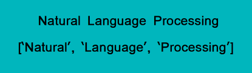
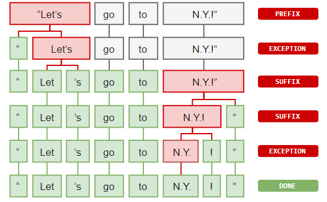
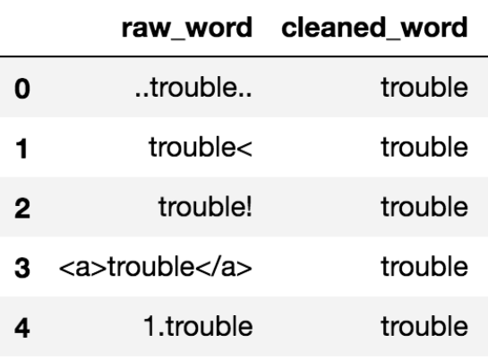
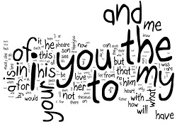
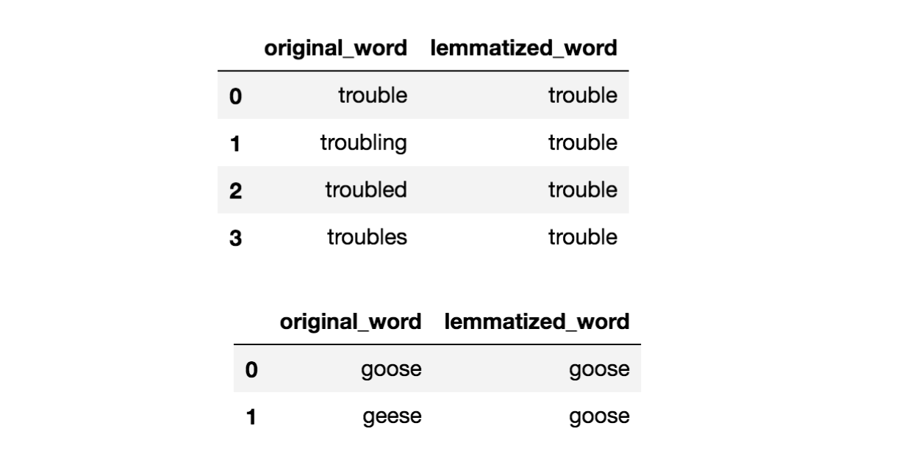

Preprocessing
Our dataset is a collection of Amazon reviews that we used to train the model. Amazon reviews may contain any type of lexicon including words that are misspelled, abbreviated, capitalized, contain punctuation, etc. The first step is to normalize this lexicon so that items such as “I’m”, “Im”, “i’m” and “im” are not treated as different words.
Tokenization
The first thing we need to do is to split the sentence into a python list of individual tokens or word boundaries that are separated in a smart way in order to process the text.
Why is tokenization necessary?
We could do something simple like split the sentence at each word space. But what about periods at the end of the sentence. We could split the words at a space or period, but what about questions marks and exclamation points? We could split the words at the spaces and a set of predefined punctuation marks, but what about words like “Mr.”. Do we want to keep the period? This is where tokenization comes in. The words are split in a very intelligent way.
Cleaning and Normalization
Now that we have our tokens, it is necessary to take some time to clean the data so that we have as few repeat entries as possible.
- Casing - The first step was to switch every letter of every token to lowercase, so that tokens such as “The” and “the” would not be treated as separate entries
- Removing Non Alphanumerics - Next all letters that were not alphanumeric were removed to prevent words such as “mr” and “mr.” from being treated as separate tokens
- Length - All tokens that were less than length 2 were also removed
- Stop Words - Stop words were removed
- Lemmatization - All words were lemmatized for greater normalization
What are Stop Words?
 />Stop words are words that do not add a lot of meaning to the text such as “the”, “it”, “as” and “about”. They may also include words that are often used sarcastically. This means that they may have their true meaning or the opposite meaning. Hence, they are removed.
What is Lemmatization?
The same word may come in many forms, such as: “eat”, “ate”, “eaten”, etc. All of these words can be normalized to what are called lemmas so that they are not treated as separate tokens, but as the same token.
Making the Featureset
We used a bag of words model in which the featureset was the presence or absence of the 3000 most commonly found words in the text.
Labeled Data

Now that we have all of this processing to normalize the data finished, we need to create our labeled data set. Only reviews of food products from Amazon that were rated as five stars or one star were used. One star reviews were labeled as negative and five star reviews were labeled as positive.
Additionally, there were a great deal more positive reviews than negative reviews so 1000 of each type were randomly selected to ensure there was no bias in the model.